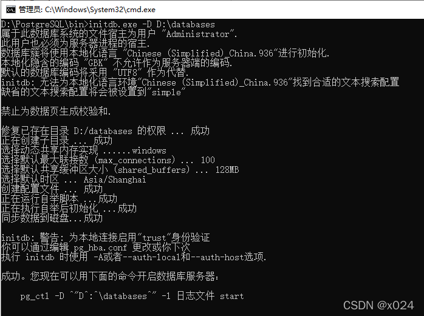

安装¶
PostgreSQL 提供了多个平台的安装包，整体安装步骤也非常简单。
1. Windows 安装¶
访问 PostgreSQL 官网下载对应版本的 Windows 安装包，下载完成后直接运行安装包进行安装，注意过程中安装路径的更改。
1.1 初始化失败¶
如果在安装快结束时，出现弹窗 “Problem running post-install step. Installation may not complete correctly. The database cluster initialiation failed.” 则表示初始化失败。
解决办法：在终端中进入 PostgreSQL 安装目录下 bin 文件夹下，并执行如下命令：

这里提示我们使用如下命令来启动 PostgreSQL 数据库服务：
1.2 创建 PostgreSQL 服务¶
完成上面操作后，为了更方便地启动 PostgreSQL 服务，我们最好在 Windows 系统中创建一个 PostgreSQL 服务，方便后续使用。
1.3 创建数据库和用户¶
执行 createdb.exe 进行 PostgreSQL 命令行终端，使用如下命令创建数据库和用户，并进行赋权：
接下来就可以使用 pgAdmin 软件进行登录了。
2. MacOS 安装¶
MAC 推荐使用 Homebrew 的方式安装 PostgreSQL，如果你想安装其他版本，可以使用 brew seach postgresql 来查看可安装的斑版本。
安装完成后，添加环境变量到 ~/.zshrc 文件后，执行 source ~/.zshrc 命令即可。
2.1 初始化¶
指向 initdb 命令进行初始化，如果初始化失败并提示如下错误，则需要先删除 /usr/local/var/postgres 文件夹，再进行初始化。
2.2 启动 PostgreSQL 服务¶
使用如下命令启动 PostgreSQL 服务：
此外，还可以使用 brew services 来管理 PostgreSQL 开机自启动：
2.3 创建数据库和用户¶
执行 createdb 命令，PostgreSQL 会为当前用户创建用户以及数据库（例如，当前登录用户为 mingminyu，则会创建一个 mingminyu 数据库和 mingminyu 用户）。
创建好用户和数据库后，执行 psql 进入 PostgreSQL 终端，进行数据库创建和用户赋权：